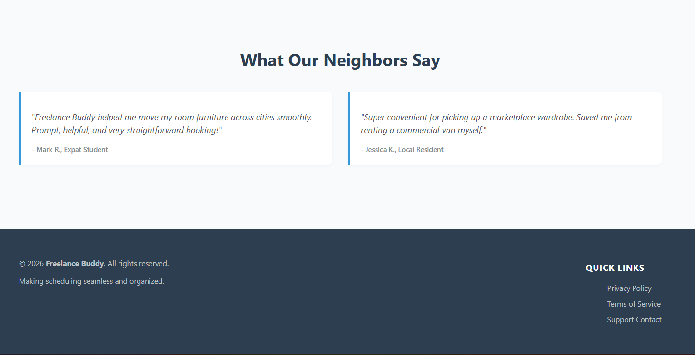
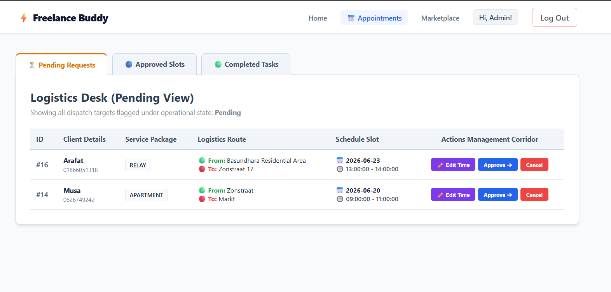

An 18-step breakdown detailing the security patterns, relational data layers, and layout state normalization built into Freelance Buddy.
Abstracted standard layout components into secure includes/ directories, optimizing code reuse across all dashboard endpoints.
Enforced InnoDB foreign key mappings directly matching users to multiple real-time booking entities.
The Obstacle: Low-payload pages caused footer assets to float awkwardly up into the absolute center of the viewport browser layout.
The Fix: Implemented a flexible layout distribution rule across the parent layout. Re-assigned semantic <main> variables to dynamically stretch and automatically compress remaining white spaces.

The Obstacle: Capitalization drifting inside client URL requests (tab=approved) caused silent row drops against strict database collations ('Approved').
The Fix: Constructed a string mutation sanitization guard combining string-to-lower and first-character capitalization adjustments before injection array validation patterns.
